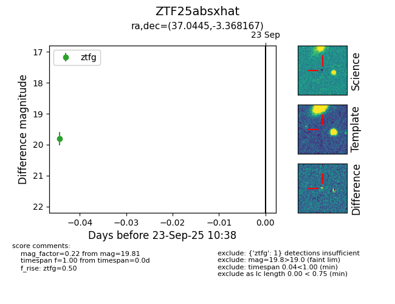

FINK: ZTF25absxhat
Lasair: ZTF25absxhat
ALeRCE: ZTF25absxhat
ZTF25absxhat (ztf,fink)
equatorial (ra, dec) = (37.0445,-3.36817)
galactic (l, b) = (171.3439,-56.85176)

last ztfg=19.81
1 ztfg detections